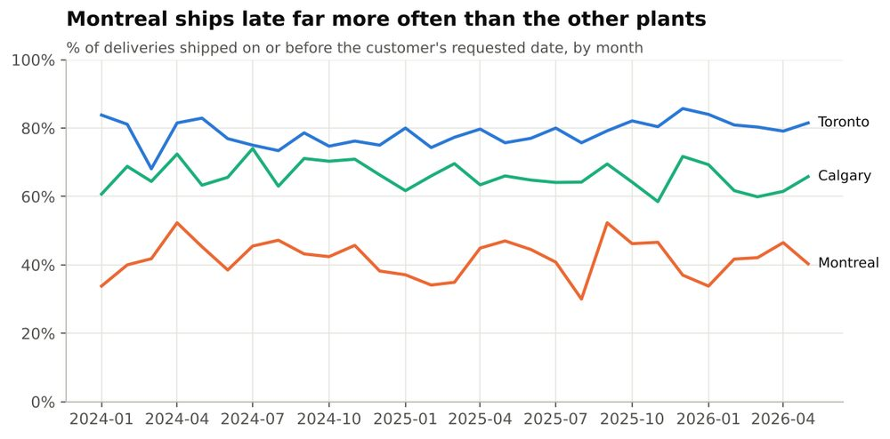

ERP · SAP S/4HANA data model
SAP Order-to-Cash & Procure-to-Pay Analytics
Analysis of a distributor's sales and purchasing in SAP's own tables (VBAK, LIKP, VBRK, BSAD, EKKO, MSEG, RBKP …) across the full document flow.
- Montreal DC ships only 43% of orders on time vs. 78% in Toronto.
- Six customers are 5.6% of revenue but 25% of overdue receivables.
- Three-way match caught a vendor whose invoices jumped to 61% above PO price.